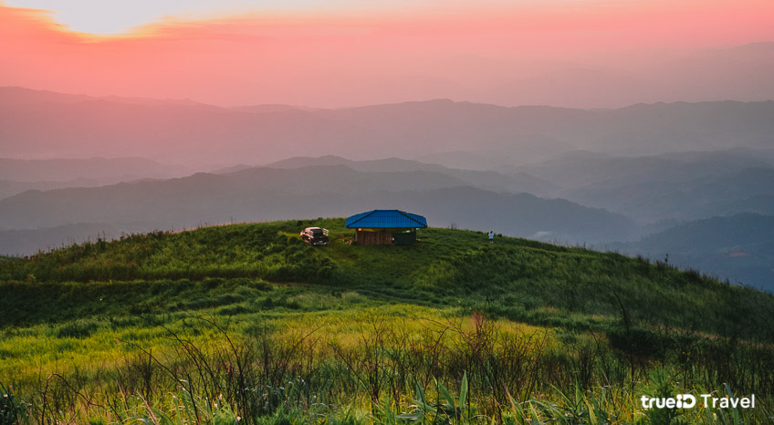

ที่เที่ยวธรรมชาติ
1. เขาคูหา สงขลา
ไป Unseen เที่ยวธรรมชาติ กับ ทะเลหมอก สุดฟิน และภูเขาหิน ที่มีวิวอลังการงานสร้างสุดๆ กันได้ที่ เขาคูหา จังหวัดสงขลา ค่ะ จากหาดใหญ่แค่ 30 กิโลเมตร ความโดดเด่นของที่นี่ก็คือ ภาพของร่องภูเขา ที่รายล้อมไปด้วยต้นสน ตรงนี้บอกเลยว่า ถ่ายรูปออกมาแล้ว นึกว่าอยู่ที่เมืองนอกเลยทีเดียว แถมยังเป็น ที่เที่ยวคนไม่เยอะ อากาศก็ดี วิวก็สวย ใครมาเที่ยวที่นี่ตอนเช้าๆ ก็จะได้ชมทะเลหมอกกันแบบ 360 องศา กันไปอีก เฮ้ย! นี่มันดีต่อใจมากๆ จ้า
2. สวนยาหลวง น่าน

สโลว์ไลฟ์กันไปที่ จังหวัดน่าน กับ ที่เที่ยวธรรมชาติ เงียบๆ สงบๆ สวยๆ กันที่ สวนยาหลวง ค่ะ เป็นที่เที่ยวที่ออกแนวจะเหมาะสำหรับสายผจญภัยหน่อยๆ เพราะในการเดินทางไปยังสวนยาหลวงนั้น ต้องต้องใช้รถ 4WD พาขึ้นไปเท่านั้นค่ะ เพราะด้วยความเป็นถนนลูกรัง ค่อนข้างชัน และคดเคี้ยวไปมาอีกด้วย
3. ละลุ สระแก้ว
วาร์ปไปเที่ยวยูทาห์ในไทยกันกับ ที่เที่ยว unseen ละลุ สระแก้ว ค่ะ ซึ่งเป็นปรากฏการณ์ที่เกิดขึ้นจากฝีมือของธรรมชาติ ด้วยน้ำฝนที่กัดเซาะ และการพังทลายของดินและยุบตัว ทำให้ดินที่แข็งจะยังคงอยู่ และเมื่อถูกลมกัดกร่อนจะมีลักษณะเป็นรูปต่างๆ ดูคล้ายกับกำแพง
4. ดอยแม่ตะมาน สันป่าเกี๊ยะ เชียงใหม่
ไปเที่ยวเชียงใหม่ กันบ้าง วันนี้ขอหลบผู้คนที่พลุกพล่านในเมืองเชียงใหม่ ออกไปสูดอากาศดีๆ รับลมหนาวกันที่ ดอยแม่ตะมาน สันป่าเกี๊ยะ ค่ะ โดยที่นี่ตั้งอยู่ใน หน่วยจัดการต้นน้ำแม่ตะมาน อำเภอเชียงดาว นั่นเอง เป็น สถานที่ท่องเที่ยวเชิงเกษตร ไว้สำหรับทดลองโครงการพัฒนาที่สูง ไทย-ออสเตรเลีย มีแปลงทดลองปลูกพืช และผลไม้เมืองหนาว นานาชนิดเลยค่ะ
5. อุทยานแห่งชาติคลองวังเจ้า กำแพงเพชร
กำแพงเพชร จังหวัดที่หลายคนอาจมองผ่าน แต่ขอบอกก่อนว่า ที่นี่ก็มีดีไม่แพ้ใครนะจ๊ะ! ตามเรามาเที่ยวธรรมชาติ ที่สงบ และร่มรื่น เป็นอีกหนึ่งที่เที่ยวคนไม่เยอะกันที่ อุทยานแห่งชาติคลองวังเจ้า กันค่ะ ที่นี่เป็นพื้นที่ป่าที่อุดมสมบูรณ์มากๆ มีสัตว์ป่ามากมาย และยังมีธรรมชาติที่สวยงามน่าค้นหาทั้ง น้ำตก จุดชมวิวสวยๆ และถ้ำต่างๆ เช่น ยอดเขาเย็น น้ำตกเต่าดำ จุดชมวิวผาตั้ง น้ำตกคลองวังเจ้า ค่ะ ได้ไปสูดอากาศดีๆ ในที่เงียบสงบแบบนี้ ดีต่อใจแน่ๆ